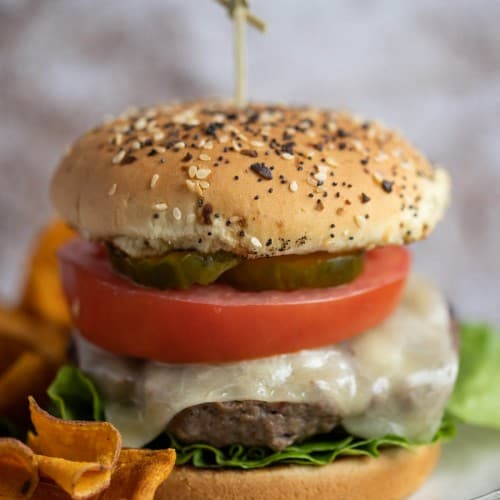

Home
Burger Recipe
A burger is a popular food item consisting of a cooked patty of ground meat, typically beef, placed between two halves of a bun. It is often served with various toppings and condiments.

My Recipe
Ingredients needed:
For the Burger Patties:
- 500 grams ground beef (or any ground meat of your choice)
- 1 small onion, finely chopped
- 2 cloves garlic, minced
- 1 tablespoon Worcestershire sauce (optional)
- Salt and pepper to taste
- 1 tablespoon vegetable oil (for cooking)
For Assembling the Burgers:
- Burger buns
- Lettuce leaves
- Sliced tomatoes
- Sliced onions
- Sliced cheese (cheddar, Swiss, or your favorite cheese)
- Pickles
- Ketchup, mustard, mayonnaise (or any other condiments of your choice)
Instructions
Making the Burger Patties:
- In a large mixing bowl, combine the ground beef, finely chopped onion, minced garlic, Worcestershire sauce (if using), salt, and pepper. Mix well until all ingredients are evenly incorporated.
- Divide the mixture into equal-sized portions and shape them into patties, ensuring they are slightly larger in diameter than the burger buns to allow for shrinkage during cooking.
- Using your thumb, make a slight indentation in the center of each patty. This prevents the patties from bulging in the middle while cooking.
- Heat vegetable oil in a skillet or grill pan over medium-high heat.
- Once the pan is hot, add the burger patties and cook for 4-5 minutes on each side, or until they reach your desired level of doneness (for medium-rare, cook for about 3-4 minutes per side).
- If adding cheese, place a slice of cheese on top of each patty during the last minute of cooking and allow it to melt.
Assembling the Burgers:
- Slice the burger buns in half horizontally and lightly toast them on a grill pan or in a toaster.
- Spread your preferred condiments (ketchup, mustard, mayonnaise) on the bottom half of each bun.
- Place a lettuce leaf on top of the condiments, followed by a tomato slice and onion slices.
- Place the cooked burger patty on top of the vegetables.
- Add any optional toppings such as bacon, avocado, fried egg, jalapeños, or mushrooms, if desired.
- Place the top half of the burger bun over the filling to complete the burger.